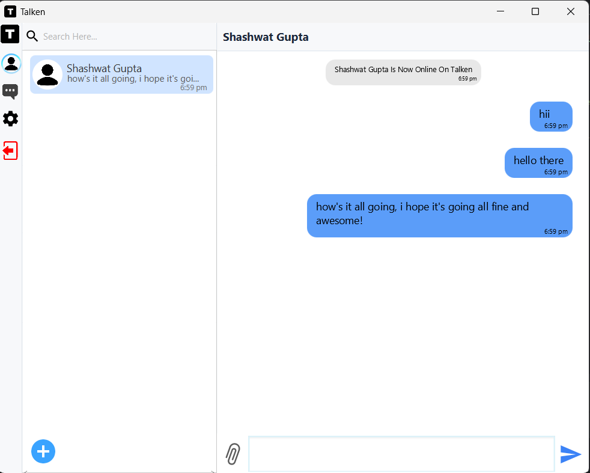

Privacy first
Your data should belong to you, not to corporations. Every project starts from that premise.
Founder · Flex Studios — Prayagraj, IN
Self-taught student developer. I build privacy-first software from first principles — like Talken, a serverless, peer-to-peer encrypted messenger, and Notes+, a notes app with no servers at all.
01 From the developer of
A messenger in a league of its own.
Every other chat app has a middle — a server that knows who you talk to, when, and from where. Talken has no middle. Messages travel device to device over an encrypted mesh, your files stay in your own Drive, and your account is a key that only you hold.
The web
Every project I’ve built, on one map. The spider sits in the middle and the threads are real: what grew into what, what powers what. Drag around, zoom into a cluster, or light up a language.
03 Origin
Until my 9th-grade half-yearlies I genuinely disliked coding. Two years later, I had a peer-to-peer messenger in beta.
Oct 2023 → Apr 2027
Coding seemed pointless and boring — until one idea: what if I could make a character move across a terminal screen from user input?
A 3,279-line terminal game: a title screen, settings, a loading bar, a gamer tag, and a (^_^) who falls from the sky and walks wherever you tell him. He's the one at the top of this page, drawn from the original sprites.
The terminal wasn't enough. A clicks-per-second tester, then my first game — Rex Run, inspired by Chrome's dinosaur and Geometry Dash.
The idea for a privacy-first chat application was born. Months went into exploring the right technologies.
Application after application — Ping Pong, Flying Dual, Flappy Bird, Memo, Tic Tac Toe, SG Paint, Notes, clock and weather widgets, a JRE installer, a floating keyboard and a colour picker.
The first testable build of Talken came together — the foundation of a privacy-first messaging experience.
User-owned storage, a mesh-network transport and lightweight coordination services — the backbone of Talken's serverless design.
The first public beta: 1:1 messaging, your-own-Drive storage and self-sovereign accounts, in testers' hands.
Talken goes to Android, gains groups, channels, personas, calls and encrypted cloud backup — passing 140,000 lines across 705 files. Alongside it: Notes+ on Android, Windows and the web, Life and Expenses on Android, the Backbench campus network, WorkDesk, and dev tools like Jctx, CodeMeter and NGlobe.
The public 1.0 of Talken.

Toolkit
Your data should belong to you, not to corporations. Every project starts from that premise.
Software should be fast and respectful of your machine — no bloat, no waste.
Every feature earns its place by solving a real problem, not by adding complexity.
Understanding beats abstraction. I build from first principles to know exactly how things work.
05 Get in touch
Open to opportunities, collaborations, freelance work and conversations about privacy, cryptography and software.
connect@talken.in